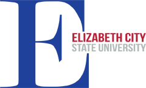

|
| Home | Resume | Professional Statement | Research | Links |
|  | Elizabeth City State University http://www.ecsu.edu/ Home of the Mighty Vikings! Elizabeth City State University is a Historically Black College and University, located in Elizabeth City, North Carolina. |
| Center of Excellence in Remote Sensing Education and Research (CERSER) http://cerser.ecsu.edu/ The goal of CERSER is to develop and implement innovative and relevant research collaboration focused on ice sheet, coastal, ocean, and marine research. |
|
 |
National Science Foundation http://www.nsf.gov/ The National Science Foundation is an independent federal agency created by Congress in 1950 "to promote the progress of science; to advance the national health, prosperity, and welfare; to secure the national defense…" |
| Research Experience for Undergraduates 2016 http://nia.ecsu.edu/reuomps2016/ The REU OMPS program objective is to promote the professional development of minority undergraduate students through their participation in ocean, marine and polar science research. The program consists of undergraduates, each student assigned to a specific research team, where they will work closely with the faculty. In addition, seminars, lunch meetings, and social functions are organized to facilitate undergraduate interaction |
| :: Center of Excellence in Remote Sensing Education and Research | ECSU | 1704 Weeksville Road | Elizabeth City, NC 27909 :: |